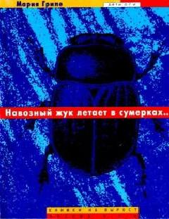

НЖBolalar tomonidan olib boriladigan qiziqarli va sirli detektiv qissa.
Ushbu detektiv qissada bir guruh bolalar qadimiy Misr haykali bilan bog'liq sirli voqeani tergov qilishadi. Qahramonlar tarixiy ma'lumotlar, falsafa va insoniy munosabatlar kabi turli mavzularni qamrab olgan murakkab jumboqlarni yechishga harakat qilishadi.